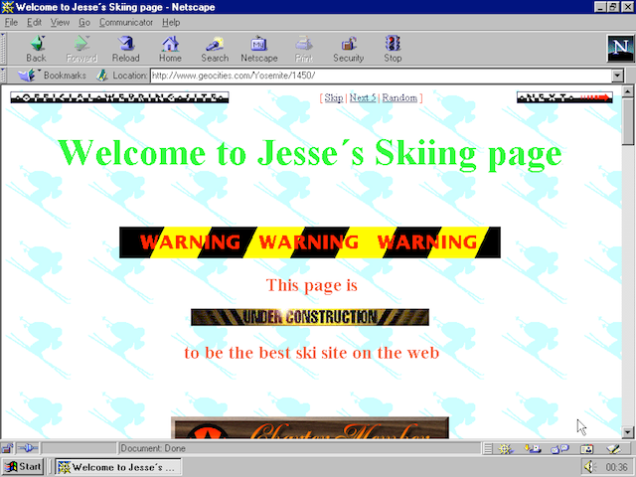

Hi everyone. My name is João Silva, and I'm a software engineer working at CERN's Advanced Information Systems group.
My presentation will be about JavaScript. Past. Present. And Future.
I will take you on a trip down memory lane, in a Civilization-esque journey of the evolution of JavaScript, from its inception in 1994,
all the way up to today.
Let's get started.
History
→
This presentation is organized in a logical, or rather, chronological way.
And I'll first start with the history of the language because, as with many other things, to understand why something is the way
it is, it is useful to know how it got there in the first place.
But even before we actually start talking about JavaScript, let's take a step back, and talk about the real beginning, the WorldWideWeb.
WorldWideWeb (1990)
As mentioned before, the World Wide Web was invented at CERN, in 1989, by Tim Berner’s Lee and Robert Caillau.
I'm also reminded of this almost everyday at CERN, when I go to the restaurant, and as I pass by a plaque,
which marks Tim Berner's Lee former office, where he was developing the technologies used for the web.
The first web browser and the first HTML editor, developed by Tim, was also called, not very originally, WorldWideWeb,
and you can see an image of it here, on his NeXT workstation, a company which was ran at the time by Steve Jobs.
It was initially used by people at CERN, introducing the web to physicists around the world, and beginning its spread.
Line-mode (1991)
Then there was the Line-mode browser, also developed at CERN, partly by Professor Derek Mathieson, and by Nicola Pellow,
a math student interning at CERN.
This browser was also ported to different operating systems, from Unix to
Microsoft DOS, Microsoft Disk Operating System, so that anyone could access the web, no matter the operating system.
NCSA Mosaic (1993)
Meanwhile, on the other side of the world, this idea of the world wide web caught the attention of a research institute in Chicago, called NCSA.
So they downloaded a copy of Tim's free browser, and decided to start developing their own, called Mosaic.
And Mosaic was the spark that lit the Web's explosive growth in 1993. Why was this?
It was the world's first cross-platform graphical web browser, it supported Unix, Macintosh, and Windows,
as well other protocols beside HTTP, such as FTP, the File Transfer Protocol, used to transfer files from one machine to another.
It also introduced some of the concepts which we can see in everyday's browsers, such as forms , where users could
finally interact with the pages through user inputs:
bookmarks and favorites to store your most viewed websites, history files ,
and of course, the img tag, which now of course allows us to see pictures of cats, and sites like 9gag to exist.
And then...
Geocities (1994)

And then...
Sites like Geocities appeared, which allowed everyone, programmer or not, to create their own web page.
I remember when I developed my first website, it was very similar to this image, with lots of animated gifs,
and of course, it always had an image which said "under construction".
And people started as well realizing the potential of the Web for making money.
This site, for example, was created by an English student, who needed to get money for his master studies.
So he created the MillionDollarHomepage.
What it does is, it contains a table of 1 million pixels.
And every pixel was sold for advertisements for 1 dollar!
And as you can see, every pixel was sold.
Genius!
The Dawn of JavaScript (1995)
Netscape Navigator
And then in 1995, Mosaic essentially changed its name and logo to this one you can see here.
How many of you recognize it? Can you raise your hands?
This was Netscape Navigator, and it marked the beginning of the JavaScript era.
Throughout the 1990s, Netscape was the dominant browser in terms of usage share.
But, most importantly, it was the browser for which JavaScript was originally developed.
Historical Background
Created in 1995 by Brendan Eich of Netscape...
Glue language
Form validations
Adding interactivity to web pages
Mocha → LiveScript → JavaScript
JavaScript was created in 1995 by Brendan Eich, an engineer working for Netscape... in just 10 days.
It was originally designed as a glue language, to provide form validations and adding interactivitiy to web pages.
It wasn't always called JavaScript. Originally, it was called Mocha, then rebranded LiveScript, to match the LiveWire server-side product of Netscape,
and later, to JavaScript, mainly for marketing reasons, as Java was very popular at the time (and still is of course), and Netscape wanted
to capitalize that popularity, because it was a brand new language, unknown to everyone.
Java is to Java Script
Car is to Car pet.- Chris Heilmann
But it has very little to do with Java. In fact... Java is to JavaScript as car is to carpet.
Lisp
➙
Scheme
➘
Functional
Smalltalk
➙
Self
➘
Object-oriented
Roots of JavaScript
In fact, it was inspired by other two languages: Scheme and Self.
From Scheme, a functional language based on Lisp, it took first-class functions and closures.
A first-class function in a nutshell is essentially the ability of a language to treat functions in
the same way you treat other types, such as integers or Strings, as I'll explain in my next slide.
From Self, it took prototypes, a style of OOP in which behaviour reuse (inheritance) is performed via a process of cloning existing objects.
There are no explicit classes, like in Java. With prototypes, objects inherit from existing objects, you can't get more object-oriented with this.
Functional JavaScript
Functions are first-class citizens
var foo = "bar";
var f = function (x, y) {
return x + y;
};
Closures and Currying
function g(x) {
return function(y) {
return x + y;
}
}
f(1,2) === g(1)(2)
Functions are first-class citizens. This means you can assign functions to variables, as you do with other types, such as strings.
You can also return functions, from within a function.
And in this case, this is actually called a closure, since the bind parameter x, is
encapsulated in the g function, and effectively allows you to have private variables in JavaScript.
Functional JavaScript
Higher-order Functions (Callback)
function forEach(array, callback) {
for (var i = 0; i < array.length; i++) {
callback(array[i], i);
}
};
var ponies = ["Applejack", "Pinkie Pie", "Aloe", "Cheerilee"];
forEach(ponies, function (eachPony, index) {
console.log(index + 1 + ". " + eachPony);
});
// 1. Applejack, 2. Pinkie Pie, 3. Aloe, 4. Cheerilee
And of course, you can create higher-order functions or callbacks . In other words, functions which receive another function as an argument.
Callbacks. Easy peazy japanazee.
Object-oriented JavaScript
The following values are primitive
Strings ("pony")
Numbers (1, 3.15)
Booleans (true, false )
null (usually explicitly assigned)
var foo = null;undefined (usually a default value, automatically assigned)
var foo;
Okay, so this was the functional part of JavaScript, let's now move on to the object-oriented part.
When you're learning JavaScript, one of the first things people say is, everything in JavaScript is an object.
This is wrong in theory, but actually true in practice, as you'll see in the next slide.
In any case, the theory is the following.
Object-oriented JavaScript
All other values are objects
The primitives use transparently the methods from the wrapper object. Open Console and show example of 20. and 20.toString.
Every number is a floating point.
All other objects are created by literals
Arrays... maps...
and Dates.
And that's it. Those are all the objects you need to know from JavaScript, it's that simple!
Object-oriented JavaScript
Prototype-based programming
var Person = function (firstName) {
this.firstName = firstName;
};
Person.prototype.sayHello = function() {
console.log("Hello, I'm " + this.firstName);
};
var person1 = new Person("João");
var person2 = new Person("António");
// call the Person sayHello method.
person1.sayHello(); // logs "Hello, I'm João"
person2.sayHello(); // logs "Hello, I'm António"
Prototype-based programming is a style of object-oriented programming that doesn't use classes, unlike Java.
Instead, behaviour reuse (also known as inheritance) is performed via a process of cloning existing
objects, which are known as prototypes.
In this example, first, we define the constructor, that is, the function that gets called, whenever we want to create a new person object.
This is more or less equivalent to the constructor in Java.
Then, we a method sayHello to the prototype of the Person object.
Then, if we create a new Person, we can call the methods which are bound to the prototype.
TODO: use fragments
Object-oriented JavaScript
Prototype-based programming
function Student(firstName, course) {
Person.call(this, firstName);
this.course = course;
};
Student.prototype = Object.create(Person.prototype);
Student.prototype.constructor = Student;
Student.prototype.sayHello = function(){
console.log("Hello, I'm " + this.firstName +
". I'm studying " + this.course + ".");
};
Student.prototype.sayGoodBye = function(){
console.log("Goodbye!");
};
Let's now create a Student object, which should inherit the sayHello method from Person.
We create a Student constructor, and inside, we call the parent constructor of Person,
and then we initialize our Student-specific properties, such as the course of the student.
Then, we inherit the prototype of the Person object and we assign its constructor.
This is more or less equivalent to the "extends" keyword in Java.
And of course, when we do this, we have to override the constructor as well, so we reset it.
And you can override existing methods or add new ones.
Why JavaScript?
Alright, so far, we have covered the history of the language, and the two programming paradigms, functional and object-oriented.
But you're a JavaScript hater, you must be asking but why? Why JavaScript? There are many better languages!
Dial-up Internet Access
28k (or 56k) telephone modem
In 1995, before broadband Internet access became widespread available, there was this thing called Dial-up Internet Access.
The sound which just played, which is very close to my heart, it's the sound of a modem connecting with another modem, across
the existing telephone infrastructure. It's the sound of the analog world being bridged by the digital.
It was sound of me getting connected to the Internet.
Form Validation
In 1995, when use of telephone modems was widespread, a round-trip to the server was a very expensive operation.
Suppose you were filling an online form, like this one on amazon, and then you click the Continue button.
It could take 30s to get back an answer from the server.
Now imagine how annoying it would be if after waiting all that time, you received an error from the server, telling you that you forgot to fill in the phone number.
Very annoying! So one of the benefits of JavaScript at that time was perform validations on the client (the browser), before the form was submitted to the server.
Of course you should always have validations on the server-side as well, but in 1995, this was a huge benefit for the user,
to see the errors right away, in real time, before sending the information to the server and waiting 30 seconds.
Dynamic web pages
The cave you fear to enter holds the treasure you seek
Before JavaScript, web pages were completely static. You had your HTML, it was rendered, and that was it, if you want to change something,
you'd have to do a full page refresh.
With JavaScript, you could add interactivity to the pages, have not static, but dynamic pages.
Basic example, I click on a button, and I add a text with a red background which did not exist before in my HTML.
This color is just to wake you up.
Or add annoying alert messages everywhere, for example here, when I type more than 5 characters, I get an alert message.
This was also used to break people's computers, by sending thousands of alert messages, when you entered a page.
Or the more annoying ones. Where you tried to close it, and then JavaScript was changing the window somewhere else, so you could never close the window.
Browser Wars (1996-)
Internet Explorer vs Netscape Navigator
Then Microsoft saw what Netscape was doing, and they also decided to implement their own language, called JScript, very similar to JavaScript.
This was the beginning of the browser wars, Internet Explorer versus Netscape Navigator, with Opera represented apparently t In the end, IE won, because they tied it to Windows, which was (and still is)
the most popular OS in the world.
They started introducing several new features to the browser, some of them completely useless, such as the blink tag, which no longer exists.
And with IE3, Microsoft also introduced its own JavaScript implementation called JScript (to avoid licensing issues with Netscape).
And all of a sudden, there were two different versions of JavaScript floating around.
ECMAScript (1997)
standardize the syntax and semantics of a general purpose, cross-platform, vendor-neutral scripting language
To cope with this different versions of the same language, in 1997, JavaScript was submitted to ECMA, a European standards organization,
which came out with a standard that defined a new scripting language called ECMAScript, which you may see online every now and then.
But basically, ECMAScript is the name of the specification, and JavaScript is the concrete implementation of it.
JavaScript Milestones
So this was around 1997. What happened afterwards?
Dynamic HTML (1997)
Allows the dynamic change the content and appearance of a web page
Document Object Model
The DOM
This is achieved by manipulating the Document Object Model (DOM) of the page.
As you can see, the DOM is essentially a tree, of all the elements in an HTML page,
starting from the document, then you have the html or root tag, then you have the head, where you put the title of the page,
the body...
DOM Manipulation
<html>
<body>
<img id="ponies" src="http://imgur.com/ponies.png"/>
<div id="container">
First paragraph
</div>
</body>
</html>
// Get DOM elements
var container = document.getElementById("container");
// Create new DOM elements and append to existing ones
var secondParagraph = document.createElement("p");
secondParagraph.innerHTML = "Second paragraph";
container.appendChild(secondParagraph);
// Change existing elements
document.getElementById("ponies.png").src = "imgur.com/pandas.png";
// Iterate over existing elements
for (var i = 0; i < container.childNodes.length; i++) {
console.log(container.childNodes[i].innerHTML);
}
XMLHttpRequest (1999)
Allows the client (the browser) to asynchronously send an HTTP(S) request to a server and get back data,
usually in a text format such as HTML, XML, or JSON.
Developed by Microsoft for Internet Explorer 5.
XMLHTTP changed everything. It put the “D” in DHTML. It allowed us to asynchronously get data from the server without refreshing the browser!
This was originally developed by the Microsoft Outlook Web Access team, because they wanted to push some of the nice desktop features of Outlook to the browser.
desire to build a rich Win32 like application in a browser pushed the technology into IE that allowed AJAX to become a reality.
JSON (2001)
JSON (2001)
JavaScript Object Notation
This was "invented" by Douglas Crackford in 2001, and I say invented, because it's nothing new.
But his idea was to use JavaScript syntax to store data in text format.
JSON (2001)
A JavaScript-based data exchange format
{
"name": "João Silva",
"employer": "CERN",
"title": "Software Engineer",
"married": false,
"born": 1986,
"interests": [ "Ponies", "Chocolate" ]
}
JSON uses JavaScript literals for strings, arrays, objects, booleans, to represent structured data.
Over the years, JSON became an alternative to XML, especially when you want to represent data, and not markup.
And of course, since JSON itself is JavaScript, it's very very easy to consume, in well, JavaScript. So METAAAA.
Async JavaScript and XML
Load content asynchronously in the background, via XMLHttpRequest
Dynamically update the current page with the results of the request, via Dynamic HTML
AJAX marked the mainstream breakthrough of JavaScript and dynamic web applications. With AJAX you could change your page in a dynamic way, without
the user ever having to refresh the browser!
But wait a minute. Wasn't that what I just showed you with the XMLHttpRequest? Yes, indeed, AJAX was not in fact something new, it was was just using existing technologies, and putting them all together, namely:
XMLHttpRequest
and manipulating the DOM or dynamic html.
AJAX Interaction
Here's a typical AJAX interaction diagram.
AJAX Interaction
// Create XMLHttpRequest object
var ajaxRequest = new XMLHttpRequest();
// Event handler for asynchronous requests
ajaxRequest.onreadystatechange = function() {
if (ajaxRequest.readyState == 4) {
var container = document.getElementById("container");
container.innerHTML = ajaxRequest.responseText;
}
}
ajaxRequest.open("GET", "serverTime.php", true);
ajaxRequest.send(null);
First thing, we create a request...
jQuery (2006)
The Write Less, Do More, JavaScript Library.
Cross-browser DOM Manipulation is hard
var checkbox = document.getElementById("myCheckbox"):
if (checkbox.addEventListener) {
checkbox.addEventListener("click", setCheckedValues);
} else {
checkbox.attachEvent("onclick", setCheckedValues);
}
jQuery was created because Cross-browser DOM Manipulation is hard.
For example, adding function that will be called whenever someone clicks a particular checkbox.
In IE, you use addEventListener, and every other browser uses attachEvent.
Also, the name of the event is different.
In IE, it's called click, on the other onclick.
jQuery
var checkbox = $("#myCheckbox");
checkbox.on('click', setCheckValues);
jQuery made DOM manipulation fun and simple, by abstracting over browser differences and by providing a powerful fluent-api,
for finding elements and modifying the DOM.
This API is based on CSS, and I'll talk a bit more in detail about jQuery and CSS Selectors in my other talk tomorrow.
AJAX without jQuery
var ajaxRequest;
try {
// Opera 8.0+, Firefox, Safari
ajaxRequest = new XMLHttpRequest();
} catch (e){
// Internet Explorer Browsers
try {
ajaxRequest = new ActiveXObject("Msxml2.XMLHTTP");
} catch (e) {
try {
ajaxRequest = new ActiveXObject("Microsoft.XMLHTTP");
} catch (e){
// Something went wrong
alert("Your browser broke!");
return false;
}
}
}
It also provided lots of utility methods to simplify development.
For example, before jQuery (BJ), this is the code to do an AJAX request.
AJAX with jQuery
$.get("serverTime.php")
.success(function (result) {
console.log(result);
})
.error(function (error)) {
alert("Your browser broke!");
};
And with jQuery, every browser-specific code is hidden by the library, and you use this nice $.get function.
V8 (2008)
JavaScript can be fast.
Google's open source JavaScript engine
One of the most important reasons is the rise of faster JavaScript engines, namely, V8.
V8 is Google's open source JavaScript engine, used for the Google Chrome web-browser.
Whenever you run JavaScript on Chrome, it's executed by V8.
V8 features
Written in C++
Compiles JavaScript directly into machine code
Runtime profiler which identifies hot functions
Can run standalone or can be embedded as a library
It's written in C++.
It uses a Just-in-Time compiler to compile JavaScript source code directly into machine code when it is first executed.
There is no intermediate bytecode, no interpreter.
Then it has a profiler which identifies hot functions, and recompiles them with another compiler, which
produces even more optimized code
It's blazingly fast
node.js (2009)
Server-side JavaScript
And V8 is the engine which allowed node.js to be created!
node.js, in a very simplistic way, is server-side JavaScript.
While the idea can be questionable, doing javascript on both the server and the client.
NODE.JS HTTP Server
var http = require('http');
var server = http.createServer(function (request, response) {
response.writeHead(200, {'Content-Type': 'text/html'});
response.end('<h1>Hello World</h1>');
});
server.listen(1337);
console.log('Server running at http://127.0.0.1:1337/');
And with just 7 lines, you can create a very simple web server with JavaScript!
Modern-day JavaScript
Alright, so far, I've discussed the past of JavaScript, all the way from its creation in 1995 up until 2009 with node.js.
Now we enter a new era, Modern-day JavaScript.
And this is the current state of JavaScript, everyone's excited and talking about it (good or badly, but talking about it).
JavaScript is cool now
Top Language on GitHub for 2015 (> 300k repositories)
Top Language on StackOverflow of all time!
Used for Web servers, Desktop applications, Presentations...
And of course, JavaScript is cool now.
It's the top language on GitHub in terms of repositories.
This year, it has overcome Java this year on StackOverflow, and it's now the top language of all time
It's used for web servers, desktop applications, presentations like this one, and also...
...Games
Text that you see if you don't support Canvas :(
sos
Games. This one for example, is just a few lines of JavaScript, using the boxbox physics engine.
Atwood's Law
Any application that can be written in JavaScript, will eventually be written in JavaScript.
- Jeff Atwood, Coding Horror
There's even a new computer science law by Jeff Atwood, the creator of StackOverflow, which says.
End-to-End JavaScript
→
One of the most used stacks for doing that, is the MEAN stack. It's a typical three-tier architecture.
It has node.js as the server-side JavaScript platform.
Express as the web application framework.
MongoDB as the database.
And AngularJS, for the client-side.
This allows you use what I call monoglot programming , a single language, JavaScript, for the entire stack.
With NODE.JS of this nice features, the idea of end-to-end JavaScript was brought back to life.
The MEAN Stack
Monoglot programming
One of the most used stacks for doing that, is the MEAN stack. It's a typical three-tier architecture.
It has node.js as the server-side JavaScript platform.
Express as the web application framework.
MongoDB as the database.
And AngularJS, for the client-side.
This allows you use what I call monoglot programming , a single language, JavaScript, for the entire stack.
Client-side frameworks
Angular by Google
Ember
React by Facebook
Polymer by Google
And many many many many many many more...
In fact, there's a joke website that counts the number of hours since the last framework.
History of JavaScript frameworks
2016 Hot JavaScript frameworks
Web Components
AngularJS
Superheroic JavaScript MVW Framework
AngularJS Directives
Extend the HTML vocabulary
<pacman></pacman>
var app = angular.module('app',[]);
app.directive('pacman', function() {
return {
// E = Element, A = Attribute, C = Comment
restrict: 'E',
replace: true,
template: "<div><img src='pacman.gif'/></div>"
};
});
React
A JavaScript library for building user interface
React Components
JSX
var Pacman = React.createClass({
render: function() {
return ;
}
});
ReactDOM.render(<Pacman/>, document.body);
React Components. More or less the same goal as Angular directives.
Create custom HTML elements.
They also introduced something new and very interesting, which is called JSX.
JSX essentially allows you to combine JavaScript and HTML.
Like this, you avoid using a templating engine, or string concatenation to create your HTML.
JavaScript Tooling
Linting Minification Testing Build and Task Automation
Let's now talk about JavaScript tooling.
Linting
is the process of running a program that will analyse code for potential errors.
Linting Tools
JSHint (first linting tool, by Douglas Crockford)
JSLint (successor of JSHint)ESLint (de-facto standard)
ESLint also works with JSX.
Minification
is the process of removing all unnecessary characters from source code without changing its functionality.
As code grows bigger and bigger... as applications use more and more JavaScript, your files get bigger.
The payload of your application will require more time to load your application.
Solutions have arised for this, such as sending compressed data to the client.
Another one, is minification.
JSMin removes comments and unnecessary whitespace from JavaScript files..
Minification
JSMin removes comments and unnecessary whitespace from JavaScript files..
Minification
JSMin (original, by Douglas Crockford)YUI Compressor UglifyJS Google Closure Compiler Packer Source Maps ("reverse" minification)
As code grows bigger and bigger..
JSMin removes comments and unnecessary whitespace from JavaScript files..
Source Maps is not really a minification tool, it's actually a reverse.
Testing
Unit testing (qUnit)
Behaviour-driven development (Jasmine)
Behaviour-driven development (Mocha)
One of the common complaints against JavaScript, was that it couldn't be tested.
That's false.
You can, and you should.
Currently, there are three standards in the industry for testing in JavaScript.
Jasmine
describe("A suite", function() {
it("expects 1+1 to be 2", function() {
expect(1+1).toBe(2);
});
});
Similar to Spock, like Pavel talked about yesterday, also with a very powerful assertion mechanism.
Build and Task Automation
Build and Task Automation
Gulp vs Grunt
Gulp
var gulp = require('gulp'),
jshint = require('gulp-jshint'),
uglify = require('gulp-uglify'),
concat = require('gulp-concat'),
mocha = require('gulp-mocha');
gulp.task('js', function () {
return gulp.src('js/*.js')
.pipe(jshint())
.pipe(jshint.reporter('default'))
.pipe(uglify())
.pipe(concat('app.js'))
.pipe(mocha())
.pipe(gulp.dest('build'));
});
Gulp is a streaming build system. The output of one task, will be the input of the other.
Dependency Management
npm (client- and server-side)
Bower (client-side)
npm as a build tool
"scripts": {
"info": "echo 'npm as a build tool'",
"lint": "echo '=> linting' && jshint assets/scripts/*.js",
"test": "echo '=> testing' && mocha test/",
"minify:js": "echo '=> minify:js' && uglifyjs assets/scripts/main.js -o dist/public/js/jquery.min.js",
"minify:css": "echo '=> minify:css' && cleancss assets/css/main.css -o dist/public/css/main.min.css",
"build": "echo '=> building' && npm run test -s && npm run minify:js -s && npm run minify:css -s",
"pretest": "npm run lint -s"
}
ECMAScript 6
Get ready for the future. Now .
The future brings many exciting developments for JavaScript.
ECMAScript 6, or ECMAScript 2015, will fix quirks and add new features.
It evolves the language.
Let's have a look at some of those features.
Classes
ES5
var Person = function (firstName) {
this.firstName = firstName;
};
Person.prototype.sayHello = function() {
console.log("Hello, I'm " + this.firstName);
};
ES6
class Person {
constructor(firstName) {
this.firstName = firstName;
}
sayHello() {
console.log("Hello, I'm " + this.firstName);
}
}
Inheritance
ES5
function Student(firstName, course) {
Person.call(this, firstName);
this.course = course;
};
Student.prototype = Object.create(Person.prototype);
Student.prototype.constructor = Student;
Student.prototype.sayHello = function() {
console.log("Hello, I'm " + this.firstName +
". I'm studying " + this.course + ".");
};
Student.prototype.sayGoodBye = function() {
console.log("Goodbye!");
};
Inheritance
ES6
class Student extends Person {
constructor(firstName, course) {
super(firstName);
this.course = course;
}
sayHello() {
super.sayHello();
console.log("I'm studying " + this.course + ".");
}
sayGoodBye() {
console.log("Goodbye");
}
}
You have also now have getters, setters, static methods, everything a "normal" object-oriented language has.
Arrow Functions
ES5
var ponies = ["Applejack", "Pinkie Pie", "Aloe","Cheerilee"];
ponies.forEach(function (eachPony, index) {
console.log(index + 1 + ". " + eachPony);
});
ES6
var ponies = ["Applejack", "Pinkie Pie", "Aloe","Cheerilee"];
ponies.forEach((eachPony, index) => {
console.log(index + 1 + ". " + eachPony);
});
Arrows a function shorthand. For example, lets' take the example from before.
We pass an anonoymous function, or a lambda.
And the new version, using arrow functions.
Nothing special, just a bit shorter, with less characters to type.
There's also another aspect, which is the way arrow functions deal with the lexical "this".
Arrow Functions
let square = x => x * x;
let add = (a, b) => a + b;
let pi = () => 3.1415;
console.log(square(5));
console.log(add(3, 4));
console.log(pi());
Arrows a function shorthand. For example, lets' take the example from before.
We pass an anonoymous function, or a lambda.
And the new version, using arrow functions.
Nothing special, just a bit shorter, with less characters to type.
There's also another aspect, which is the way arrow functions deal with the lexical "this".
Block-scope
ES6 let keyword
function addLinks () {
for (let i = 0, link; i < 5; i++) {
link = document.createElement("a");
link.innerHTML = "Link " + i;
link.onclick = function (num) {
alert(i);
};
document.body.appendChild(link);
}
}
Default parameters
function sayMsg(msg='This is a default message') {
console.log(msg);
}
sayMsg(); // This is a default message
sayMsg('I <3 ponies!'); // I <3 ponies
Spread Operator
function add(a, b) {
return a + b;
}
let nums = [5, 4];
console.log(add(...nums));
Destructuring assignment
ES5
var foo = ["one", "two", "three"];
var one = foo[0];
var two = foo[1];
var three = foo[2];
ES6
var [one, two, three] = foo;
Thanks to destructuring assignment, functions can return multiple values.
https://developer.mozilla.org/en-US/docs/Web/JavaScript/Reference/Operators/Destructuring_assignment
Template Strings
ES5
var name = "João";
var time = "today";
console.log("Hello " + name + ", how are you "
+ time + "?");
// Hello João, how are you today?
ES6
let name = "João";
let time = "today";
console.log(`Hello ${name}, how are you ${time}?`);
// Hello João, how are you today?
Modules
// math.js
var double = function(x) {
return x + x;
}
var square = function(x) {
return x * x;
}
export { double, square }
// client.js
import { double, square } from 'math';
double(2);
square(3);
Many more features...
Generators Promises Iterators etc.
Using ES6 today
Transpilers (source-to-source compilers)
Even though ES6 is not yet available in all browsers, you can already try it today.
There are now tools called transpilers, our source-to-source compilers, such as Traceur, by Google.
And perhaps the most famous one, Babeljs, which take your code in ES6, and transform or transpile it to ES5.
Use this step in the build system.
Takeaways
JavaScript is the de-facto language of the Web
JavaScript is not going away anytime soon
You might as well learn a thing or two about it, just in case
Dynamic web applications led to JavaScript's initial popularity.
The Web became an ecosystem for applications, and you need JavaScript for it.
JavaScript has become fast due to modern engines.
Server-side JavaScript like node.js and now io.js, allow you use the same langauge on bioth the server
and the client.
Node.js also allows you to build tooling and scripts.
It's the most open programming langauge there is.
It's the most popular programming language of the world.
Others have tried to replace it, such as GWT, Dart, Coffeescript, and they all failed.
One thing is clear, it's not going away anytime soon.
You might as well learn a thing or two about it, just in case.
That kind of wraps it up. Thank you for listening to me.
We have just scratched the surface of a big ocean.


 ;
}
});
ReactDOM.render(<Pacman/>, document.body);
;
}
});
ReactDOM.render(<Pacman/>, document.body);